will not slip, and the tension on the main rope can be taken on the attached rope. Also useful for a climbing hitch.
FLEM ISH KNOT or DOUBLE OVERHAND KNOT
For securing two ropes or cords of equal thickness together.
FISHERM AN’S KNOT
For joining two springy materials together; suitable for wire, fishing gut or vines. Two thumb knots (one on each rope) pulled tight. The knots lock together.
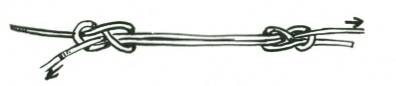
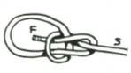
OVERHAND FISHERM AN’S KNOT
Similar to fisherman’s knot; for general uses. M ore positive for gut fishing lines and nylon.
KNOTS TO MAKE LOOPS IN ROPE
BOWLINE
To form a loop that will not slip on a rope end.
BOWLINE ON A BIGHT
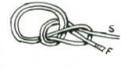

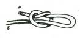
To make a double loop that will not slip on a rope end. Also called a bo’sun’s chair.
FISHERM AN’S EYE KNOT
This is the best method of making a loop or eye in a fishing line. The strain is divided equally between the two knots.
SLIP KNOT
For fastening a line to a pier or a pole or any other purpose where strain alone on the standing end is sufficient to hold the


knot.
OVERHAND EYE KNOT
This method of making an eye or loop is satisfactory and quick, but it sometimes jams and becomes difficult to untie.
FLEM ISH EYE KNOT
Used for all purposes where a loop is required, less likely to jam than overhand eye knot.
CRABBINS HITCH
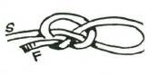
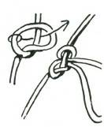
This eye knot, though not very well known, is one of the stoutest eye knots. It has not the tendency to cut itself or pull out common to some of the other eye knots. It also makes a useful running knot.
M ANHARNESS KNOT
This is a most useful knot for making a series of non-slip loops in a rope for the purpose of harnessing men for a pull. The marlinspike hitch is made as in lower sketch and then the loop is
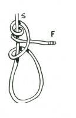
drawn under and over the other two ropes as indicated. The whole knot is then pulled taut.
M IDSHIPM AN’S HITCH
This is an old-fashioned hitch often used to fasten a block or sheave to a rope’s end.
JURY KNOT or TRUE LOVER’S KNOT


This knot is primarily for a mast head, to form loops by means of which the mast may be stayed. It is called a jury knot because in sailing ship days it was often used to rig a temporary or jury mast.
Three hitches as in top sketch are formed. The loop C is pulled under B and over A. D is pulled over E and under F. G is pulled

straight up for the third loop. H is made by splicing the two free ends together.
BOW THONG HITCH
Used by New Guinea natives for securing the end of the split cane bow thong to the pointed end of the bow. Also useful for fastening rope over the tapered end of a spar.
KNOTS FOR FAS TENING ROPES
SLIPPERY HITCH

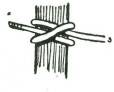
Very useful because of the ease with which it can be released in emergency. It holds securely for so long as there is a strain on the standing end.
CLOVE HITCH
For securing a rope to a spar. This hitch, if pulled taut, will not slip up or down on a smooth surface. A useful start for lashings.

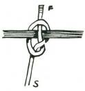
BOAT KNOT
This is a method of securing a rope to a thole pin or other small piece of wood on a boat. It is quickly released.
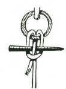
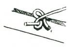
DOUBLE BOAT KNOT
A bight is simply passed through the ring and a marlin spike or other round piece of wood is put between the bight or the rope.
Withdrawal of the spike quickly releases the knot.
SLIPPERY HITCH
Very useful because of the ease with which it can be released in emergency. It holds securely so long as there is a strain on the standing end.
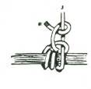

ROLLING HITCH
To fasten a rope to a spar. This is a very secure fastening.
TIM BER HITCH
For securing a rope to squared timber, round logs, etc. A good starting knot for all lashings. The standing end must pull straight through the loop, not backwards, or the rope may cut upon itself.
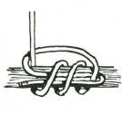

HALLIARD HITCH
For fastening a rope to a spar. The sketch shows the hitch open. When pulled taut, and the hitches closed, it makes a very neat and secure fastening.
BLACKWALL HITCH

A quick way to secure a rope to a hook. The strain on the standing end will hold the rope secure to the hook.
NOOSE HITCH
This is a quick and easy method of securing a rope to a spar or beam. If desired, the rope can be made more secure by means of the overhand knot shown in Fig. 2.
CAT’S PAW HITCH
For securing a rope to a hook or a spar. It is most useful because it is so easily tied.

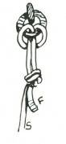
LARK’S HEAD
This is an easy method of securing a rope to a ring or hook. If desired to make more secure, it can be stoppered, as shown, with an overhand or thumb knot.

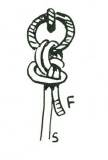
CROSSOVER LARK’S HEAD
Used for purposes above.
DOUBLE LARK’S HEAD
The bight is first made. The ends passed through it. This knot

is very secure.
TRIPLE LARK’S HEAD
The apparently complicated knot is easily made by taking the bight of the rope through the ring, the ends are passed through the bight and up through the ring, then down through its own bight.
Like the double lark’s head, this knot is absolutely secure.
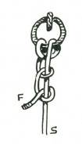

SAILOR’S BACKHAND KNOT
Used to secure a rope to a ring or hook. This is very similar to the Rolling Hitch (page 9) and Sailor’s Backhand Knot (alternative variation) shown overleaf.
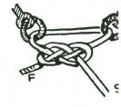

SAILOR’S KNOT
Simply two half hitches round the standing end of the rope.
GUNNER’S KNOT
This is simply a carrick bend and used to hold two shackles or rings together.
SAILOR’S BACKHAND KNOT
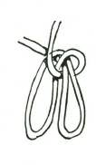
(Alternative variation.) Used to fasten a rope securely to a spar.
CATSPAW
This knot is used for attaching a rope to a hook. The two bights are rolled two or three times and then put over the hook.
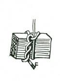
KELLICK HITCH
Used for fastening a stone (for a kellick in lieu of an anchor), that will hold in rocky sea bottoms where an anchor might foul. It is a timber hitch finished off with a half hitch.
TOM FOOL’S KNOT

Formed by making a clove hitch as two loops not exactly overlaying each other. The inner half of each hitch or loop is pulled under and through the outer side of the opposite loop, as indicated by arrows.
This knot can be used to improvise a handle for a pitcher by pulling the centre knot tight around the lip of the pitcher and using the loops as handles.

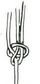
SHEEPSHANK
This is a convenient knot to quickly shorten a rope.
One method of securing the end.
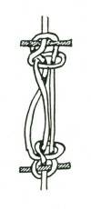
SHEEPSHANK TOGGLED
The insertion of a toggle in the end secures the sheepshank against slipping.
DRUM SLING
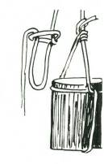